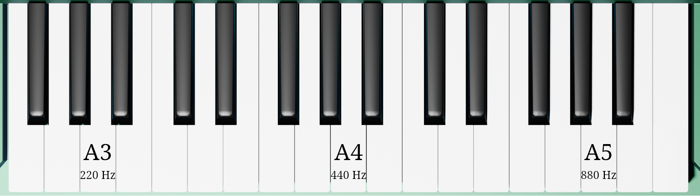
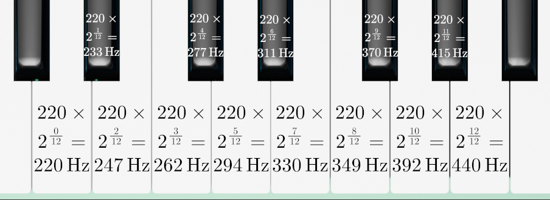
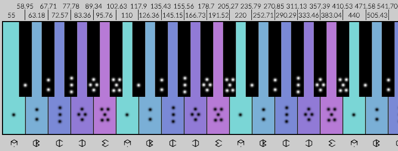
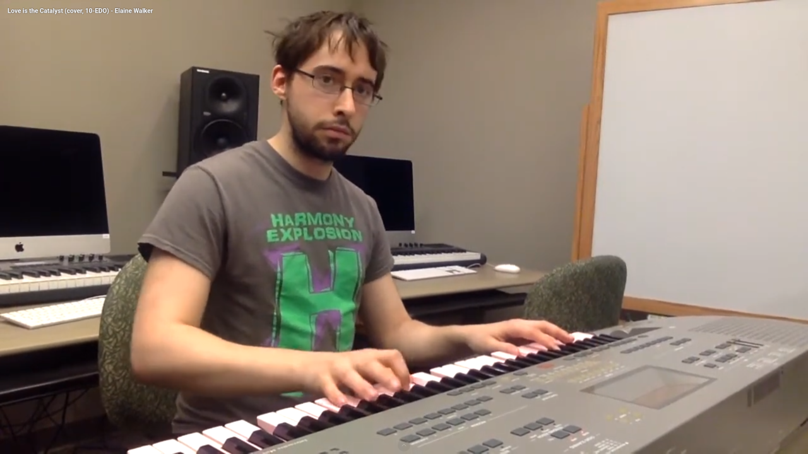
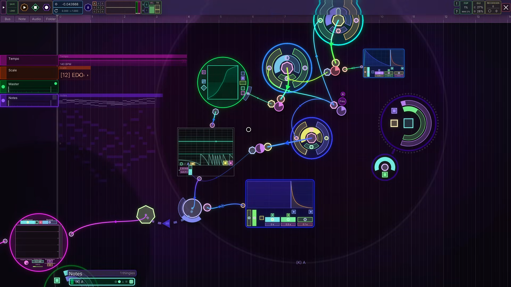

Xenharmonics
It’s okay to bounce off of what I’m offering here. It is a lot to digest, and most people will need more time to embrace it. Stop anywhere and come back to this page when you are ready. The second digit of our calendar year will change before this is mainstream. If you don’t care about what’s mainstream, proceed; because there’s a fair chance this subject is worth your time.
Parallel to our recognition that the temporal grid enforced by metronomes is sometimes undesirable is the rediscovery of microtonal music. I’ll explain things briefly, then let you explore on your own.
An octave, so called because it inclusively spans eight white piano keys, is equivalent to doubled frequency.
For example, the note A4 is typically tuned to 440 Hz; under this condition, seven white notes to the right, A5, is tuned to 880 Hz and A3, which is seven white notes to the left, is tuned to 220 Hz.

In pitch perception for humans, the difference between 220 Hz and 440 Hz is the same as the difference between 440 Hz and 880 Hz. In other words, pitch perception is logarithmic.
A musical keyboard typically consists of seven white notes and five black notes per octave. The particular way they are arranged is a convenience that suits the “diatonic” family of 7-note “moment of symmetry” scales. As it’s just a convenience, there is no relative difference between white and black notes. The tuned frequencies of these notes are usually equally spaced, such that each sequential note is the same difference as the previous.
In order to achieve a perceptually equal spacing, the frequencies are derived by multiplying the previous frequency by the twelfth root of two: 2^(1/12) ≈ 1.05946. This works because there are twelve total steps to reach the next octave. If you do this, the twelfth frequency becomes 2^(12/12) = 2 times the starting frequency.

In 2019, I considered what would happen if I changed the number of notes that there are in each octave, but kept them equally spaced. For example, I experimented with changing the number to ten, which would make the multiplier be 2^(1/10). I referred to it as a decimal system for music, suggesting that the usual system is dozenal. Here is the concept I drew for an alien keyboard:

I conducted an experiment in Python with only 10 notes per octave. I was disappointed to find that with the intervals I rendered, no matter which notes I picked, I couldn’t make the melody of Mary Had A Little Lamb sound correct or good. I set down my laptop and paced the apartment for a minute. Then I got excited: If I can’t play 12 tone music with a 10 tone system, that means I’d also have trouble playing 10 tone music with a 12 tone system. An entire space of unexplored music exists which is melodically distinct from everything we currently know. Because it’s not just 10-tone; it’s N-tone and everything else I could possibly think of. It doesn’t even need to be double the frequency for an “octave”, it could be some other magnitude, like pi.
I searched the internet to see if this had been done before. I didn’t know what to look for because my vocabulary was wrong, but among results for “10 tone music” I found Stephen Weigel’s cover of Love is the Catalyst. This was possible because he explained the music in the video description (SEO is important). It is more commonly called “10EDO”, meaning ten equal divisions of the octave; and it was and still is very niche. The field that includes these alternatives in tuning is called either “microtonal” or “xenharmonic”.

Without fussing too much about the precise definitions of those words, “microtonal” means that at least some notes don’t fit inside a 12EDO (also called 12TET, twelve tone equal temperament) framework and xenharmonic means that the music provides an experience that is melodically or harmonically unfamiliar to the listener or cultural environment in which it was created.
Because xenharmonic music is so unfamiliar and because I had very little musical background, I would have given up with it if others had not also been creating xenharmonic music, which allowed me to listen and become better acquainted. When most people, myself included, hear a tuning that’s quite different to what they are used to, it sounds bad. We’ve become accustomed to hearing music that is out of tune as being unskilled or incorrect. Xenharmonic music is only out of tune relative to music that doesn’t use that tuning. It is, obviously, in tune with itself, and our brains merely need time to grasp and warm up to it. For a lot of people, 90 seconds is about the time required to lock in on a song where it no longer sounds out of tune. And it will require a lot more time before the tuning becomes natural to the listener. Not so surprisingly, it is often most difficult for trained performers to accept microtonal music.
None of it is really new, but over the last few centuries, we’ve grown more accustomed to the 12TET monoculture. Bach was acquainted with various temperaments, traditional Turkish music uses a 17 note system, traditional Indian scales are sampled from 22 notes per octave, and there are many other global and historical examples. Colonization had a strong effect of burying more. Within Western traditions, things that are technically microtonal also exist; including Blues scales which contain “blue notes”; and barbershop, which employs just intonation, whether or not a cappella singers are fully aware of the science behind what they are doing.
Before venturing into theory any further, I prescribe listening to microtonal music.
For ease of listening, I’ve selected songs that all use the same system, in this case, 14EDO. All tunings have their own quirks, so this is not representative of all xenharmonic music. I selected this tuning arbitrarily.
Be patient with your ears. If you absolutely hate a song, feel free to skip it; but my hope is that by the time you get to the last one, you’ll easily hear a guitar and singer that are in tune; even though that tuning is different from what you grew up with.
14EDO Examples (YouTube Playlist)
I won’t tell you here what my favorite systems are. Discover them on your own.

Ignore this picture; it's not important.
When you get used to microtonal and xenharmonic music, it can be euphoric.
From here, the topics are broad and deep and it wouldn’t be efficient for me to explain them on this page. I’ll simply state that math and psychoacoustics determine how a particular interval or chord sounds.
If you want a diverse and large microtonal playlist, try either of these, maybe on shuffle:
Large Spotify Playlist
Large YouTube Playlist
For passive consumption, you may listen to this podcast:
Now and Xen (YouTube)
Some of the guests on this podcast use vocabulary that won’t be familiar to you. You can stop to look things up, or simply learn the language through context and exposure.
This is probably the best source if you are wanting to dive into the theory or learn how to make microtonal music:
en.xen.wiki
Find the answer to a specific question you have or learn one new thing; don’t try to take it all in at once. I learned everything I know gradually and through experience. You can also just search the internet, but keep in mind that there is a lot of misinformation and many incorrect opinions. Even “experts” are wrong about some things.
Finally, here are some community links:
(Facebook Group) Xenharmonic Alliance: Microtonal Music Forum
(Reddit) r/microtonal
(Discord) Xenharmonic Alliance
The current reality of mainstream media
See you in 75 years. (from 2026)
█████████████████████████
Hi, person who’s reading this 10 years later.
Hi, person who’s reading this 20 years later.
Hi, person who’s reading this 30 years later.
Hi, person who’s reading this 50 years later.
Hi, person who’s reading this 75 years later.
Hi, person who’s reading this 100 years later.
Hi, person who’s reading this 200 years later.
Hi, person who’s reading this 1000 years later.